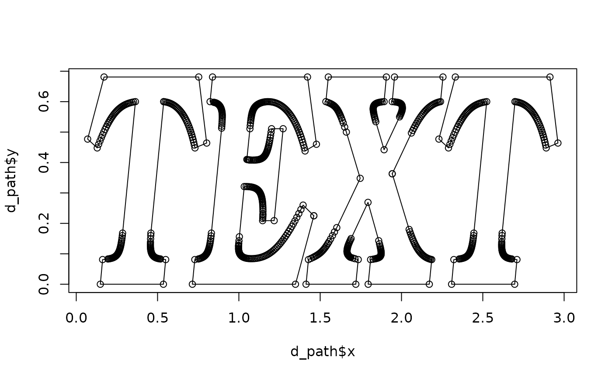
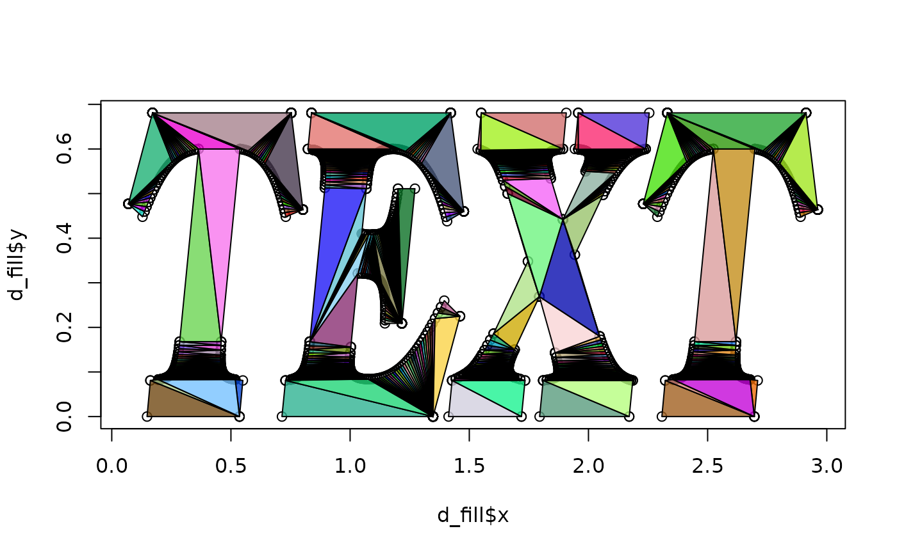
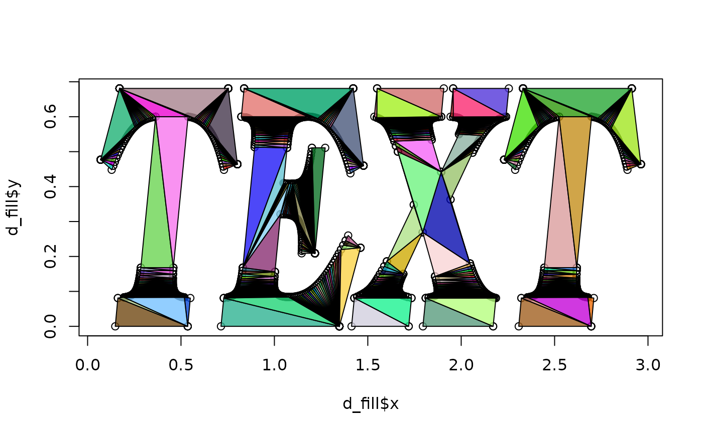

string2path() converts a text to the paths of the width-less outlines of
each glyph. string2stroke() converts a text to the paths of the outlines,
with the specified line width, of each glyph. string2fill() converts a text
to the paths of the filled polygon of each glyph.
Usage
string2path(
text,
font_family,
font_weight = c("normal", "thin", "extra_thin", "light", "medium", "semibold",
"bold", "extra_bold", "black"),
font_style = c("normal", "italic", "oblique"),
tolerance = 5e-05
)
string2stroke(
text,
font_family,
font_weight = c("normal", "thin", "extra_thin", "light", "medium", "semibold",
"bold", "extra_bold", "black"),
font_style = c("normal", "italic", "oblique"),
tolerance = 5e-05,
line_width = 0.03
)
string2fill(
text,
font_family,
font_weight = c("normal", "thin", "extra_thin", "light", "medium", "semibold",
"bold", "extra_bold", "black"),
font_style = c("normal", "italic", "oblique"),
tolerance = 5e-05
)Arguments
- text
A text to convert to paths.
- font_family
A font family.
- font_weight
A font weight.
- font_style
A font style.
- tolerance
Maximum distance allowed between the curve and its approximation. For more details, please refer to the documentation of the underlying Rust library.
- line_width
Line width of strokes.
Value
A tibble() containing these columns:
- x
x position of the point on the path, scaled to x / line height. The left side of the first glyph is at x = 0.
- y
Y position of the point on the path, scaled to y / line height. The baseline of the first line is at y = 0.
- glyph_id
IDs to distinguish the glyphs.
- path_id
IDs to distinguish the groups of paths.
- triangle_id
IDs to distinguish the triangles.
string2path()doesn't contain this column.
Examples
available_fonts <- dump_fontdb()
if (nrow(available_fonts) > 0) {
family <- available_fonts$family[1]
weight <- available_fonts$weight[1]
style <- available_fonts$style[1]
# string2path() converts a text to paths
d_path <- string2path("TEXT", family, weight, style)
plot(d_path$x, d_path$y)
for (p in split(d_path, d_path$path_id)) {
lines(p$x, p$y)
}
# string2stroke() converts a text to strokes
d_stroke <- string2stroke("TEXT", family, weight, style)
plot(d_stroke$x, d_stroke$y)
# The stroke is split into triangles, which can be distinguished by `triangle_id`
set.seed(2)
for (p in split(d_stroke, d_stroke$triangle_id)) {
polygon(p$x, p$y, col = rgb(runif(1), runif(1), runif(1), 0.8))
}
# string2fill() converts a text to filled polygons
d_fill <- string2fill("TEXT", family, weight, style)
plot(d_fill$x, d_fill$y)
# The polygon is split into triangles, which can be distinguished by `triangle_id`
set.seed(2)
for (p in split(d_fill, d_fill$triangle_id)) {
polygon(p$x, p$y, col = rgb(runif(1), runif(1), runif(1), 0.8))
}
}

 
